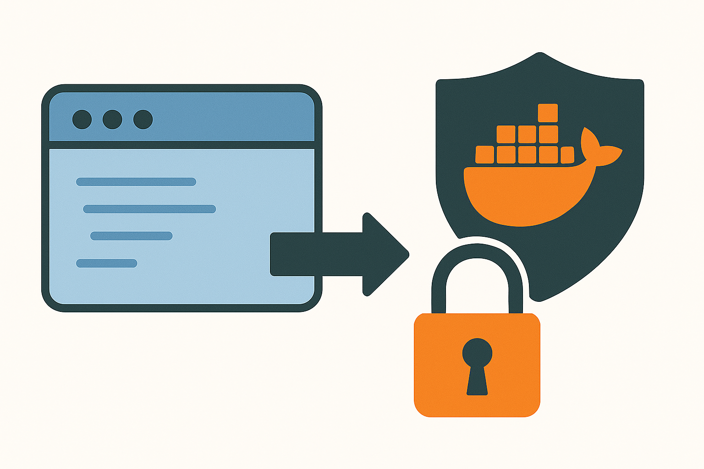

Encrypting any file (including a Docker) for UltraEdge
Reference : RA 458
Description
This Reference Architecture describes how to use the encryption scripts provided by the UltraEdge tester installer.
Sample code is also provided to show how to install private keys on the UltraEdge PC.
The encryption example works with any file including Docker .tar.gz files.
General Technical Info
| Component | Version |
|---|---|
| Shell | Bash |
| Linux | WSL (Windows Subsystem for Linux |
Windows Subsystem for Linux
The encryption scripts provided with the UltraEdge software use the Unix shell bash syntax. To execute these scripts, a Linux environment is recommended through either a full Linux installation or using the WSL feature provided by Windows 10/11. We will use WSL in this tutorial since Teradyne testers typically use the Windows operating system.
Note that this tutorial does not explain how to install WSL. It is thus highly recommended to visit https://learn.microsoft.com/en-us/windows/wsl/install.
Create the RSA key pair
The UltraEdge environment uses the RSA cryptosystem. For information about RSA cryptography, please refer to https://en.wikipedia.org/wiki/RSA_cryptosystem
As an alternative, you can also use IG-Secure from the Teradyne OASIS Toolset. More information here: https://myinfo-support.teradyne.com/documentation/r/IG-Secure/Oasis_4.5
The first step is to create public-private key pair files. To do so, the UltraEdge software provides a shell script. Here are the instructions on how to generate those files using WSL.
Start WSL
Navigate to the destination folder where the key files should be generated.
Execute the following command:
/mnt/c/Program\ Files\ \(x86\)/Teradyne/UltraEdge/Docs/gen_keys.sh my_secret_keyswheremy_secret_keysis a chosen name for the files (it can be replaced by any name).
The shell will display the following messages:
Utility version:
OpenSSL 3.0.13 30 Jan 2024 (Library: OpenSSL 3.0.13 30 Jan 2024)
Generating RSA key pair --> rsa_pair.pem
Extracting public key --> my_secret_keys_pub.pem
writing RSA key
Extracting private key --> my_secret_keys_priv.pem
writing RSA key
Removing RSA key pair --> rsa_pair.pem
Done
As a result, two files are generated:
- the public key file (
my_secret_keys_pub.pem) that can be used to encrypt any file. - the private key file (
my_secret_keys_priv.pem) that is secret and should not be distributed. It must be installed once and for all on the UltraEdge.
Install a private key
As explained previously, the private key is not meant to be distributed. It must be installed once and for all on the UltraEdge system.
To be retrieved when decrypting files, the private key must also be associated to a TAG.
To help with all this, the UltraEdge software provides the UltraEdge.dll library. Using this library makes it easy to install a private key file with a few lines of code.
The following code samples show how to do this using Powershell, VBA, or C#. The code can be adapted to fit other languages if needed.
The algorithm is straightforward:
- Import the DLL
- Connect to the UltraEdge
- Start a session
- Copy the key file
- Store the key into the TPM on the UltraEdge and associate it with a TAG.
- End the session
- Disconnect from the UltraEdge
IMPORTANT Note that the following code assumes that the private key file is named
my_secret_keys_priv.pemand the tag is namedDECRYPT_KEY.
Install a private key with powershell
# Add a reference to the UltraEdge DLL to use the UltraEdge object
Add-Type -LiteralPath "C:\Program Files (x86)\Teradyne\UltraEdge\UltraEdge.dll"
# Create an instance of the UltraEdge object
$UE = New-Object Teradyne.Igxl.Utilities.UltraEdge
# Key File and Tag name
$private_key = "my_secret_keys_priv.pem"
$tag = "DECRYPT_KEY"
# Connect to the UltraEdge
$status = $UE.Connect()
# Start a session
$status = $UE.SecureSession.Start("")
# Transfer Private Key File
$private_key_path = (Get-Location).path + "\" + $private_key
$UE.WriteFile($private_key_path, $private_key)
# Install the key in the UltraEdge TPM, associating the name "DECRYPT_KEY" for later decryption
$UE.StoreKey($private_key, $tag, "", "")
# End session - ramdisk is removed deleting the key file
$UE.SecureSession.End()
# Disconnect from the UltraEdge
$UE.Disconnect()
Install a private key with VBA
This code can be run from a test program or a simple Excel file.
A reference to C:\Program Files (x86)\Teradyne\UltraEdge\UltraEdge.tlb must be added to the VBAProject using the Tools->Reference menu or the "References" sheet in IGXL.
Option Explicit
Public Const PRIVATE_KEY_FILE As String = "my_secret_keys_priv.pem"
Public Const SESSION_TAG As String = "DECRYPT_KEY"
Public UE As New UltraEdge.UltraEdge
Public Sub InstallKey()
' Connect to the UltraEdge
UE.Connect
' Start a session
UE.SecureSession.Start ""
' Transfer Private Key File
UE.WriteFile PRIVATE_KEY_FILE, PRIVATE_KEY_FILE
' Install the key in the UltraEdge TPM, associating the name "DECRYPT_KEY" for later decryption
UE.StoreKey PRIVATE_KEY_FILE, SESSION_TAG, "", ""
' End session - ramdisk is removed deleting the key file
UE.SecureSession.End
' Disconnect from the UltraEdge
UE.Disconnect
End Sub
Install a private key with C#
A reference to C:\Program Files (x86)\Teradyne\UltraEdge\UltraEdge.dll must be added to the project.
IMPORTANT: make sure the
Copy Localoption is set toFalse
public class UETools
{
private const String UE_DLL = @"C:\Program Files (x86)\Teradyne\UltraEdge\UltraEdge.dll";
private const String PRIVATE_KEY_FILE = "my_secret_keys_priv.pem";
private const String SESSION_TAG = "DECRYPT_KEY";
// Handle to the UltraEdge object
private UltraEdge UE { get; set; }
// Singleton
private static UETools _instance;
private UETools()
{
UE = new UltraEdge();
}
/// <summary>
/// Factory including the AppDomain resolution for the UltraEdge DLL
/// </summary>
public static UETools GetInstance()
{
if (_instance == null)
{
AppDomain.CurrentDomain.AssemblyResolve += CurrentDomain_AssemblyResolve;
_instance = new UETools();
}
return _instance;
}
/// <summary>
/// AppDomain resolution for the UltraEdge DLL
/// </summary>
private static Assembly CurrentDomain_AssemblyResolve(object sender, ResolveEventArgs args)
{
Assembly a = null;
if (args.Name.Contains("UltraEdge"))
a = Assembly.LoadFrom(UE_DLL);
return a;
}
/// <summary>
/// Install a private key file in the TPM of the UltraEdge
/// </summary>
public void InstallPrivateKey()
{
// Initialize the UE object
UltraEdge UE = new UltraEdge();
// Connect to the UltraEdge
UE.Connect();
// Start a session
UE.SecureSession.Start("");
// Transfer Private Key File
UE.WriteFile(PRIVATE_KEY_FILE, PRIVATE_KEY_FILE);
// Install the key in the UltraEdge TPM, associating the name "DECRYPT_KEY" for later decryption
UE.StoreKey(PRIVATE_KEY_FILE, SESSION_TAG, "", "");
// End session - ramdisk is removed deleting the key file
UE.SecureSession.End();
// Disconnect from the UE
UE.Disconnect();
}
}
Encrypt files
Now that the RSA public/private key pair is generated and the private key is installed on the UltraEdge, files can be encrypted and sent to the UltraEdge.
Any file can be encrypted: python code (.py), archives (.zip), docker files (.tar.gz), or even simple text files (.txt).
To do so, use the script provided by the UltraEdge software.
Start WSL
Navigate to the folder where the file to encrypt is located.
Execute the following command:
/mnt/c/Program\ Files\ \(x86\)/Teradyne/UltraEdge/Docs/encrypt.sh my_file my_secret_keys_pub.pemwhere
my_fileis the file to encrypt andmy_secret_keys_pub.pemis the encryption key.
The shell will display the following messages: (the 'deprecated' message can be ignored)
Utility version:
OpenSSL 3.0.13 30 Jan 2024 (Library: OpenSSL 3.0.13 30 Jan 2024)
Generating encryption key --> gen_keys.sh.key
Encrypting source file --> gen_keys.sh.enc
Encrypting key file --> gen_keys.sh.key.enc
The command rsautl was deprecated in version 3.0. Use 'pkeyutl' instead.
Removing key file --> gen_keys.sh.key
Done
As a result, two files are generated:
my_file.encwhich is the encrypted file.my_file.key.encwhich is required to decrypt the file on the UltraEdge. It will be combined with the private key already installed to decrypt the encrypted file.
This is it.
The encrypted file and additional key file will be both used to deploy an application to the UltraEdge.